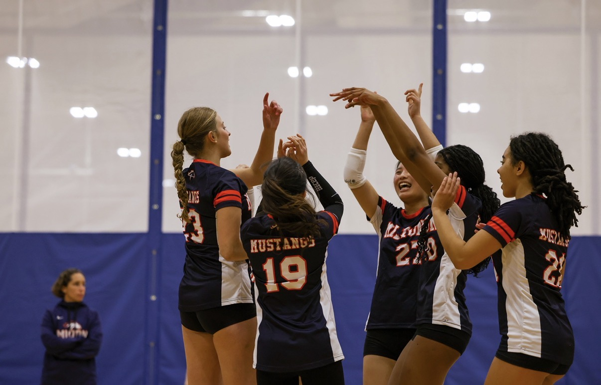
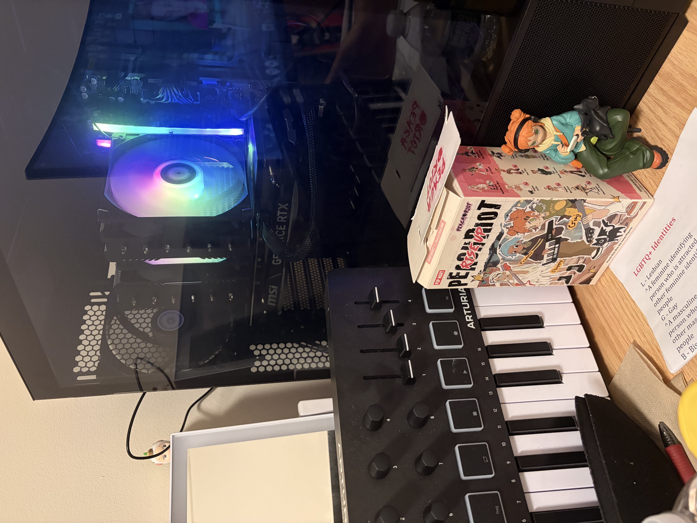

My Hobbies
Sports
I love playing volleyball as a setter and right side hitter. I have a big love for running and have been training for a half marathon. In track, I run the 100m, 200m, throw javelin, and might even start doing hurdles. I also love going to the gym, and even set the girls school record in deadlifting.

Other
I really enjoy playing video games, so much so that I made my own youtube channel on playing them. I also love learning about computers in general, and last year I built my first pc. I also love collecting stuff like cards, funko pops, figurines, and manga. I love taste testing. And finally, I love singing and making music.
